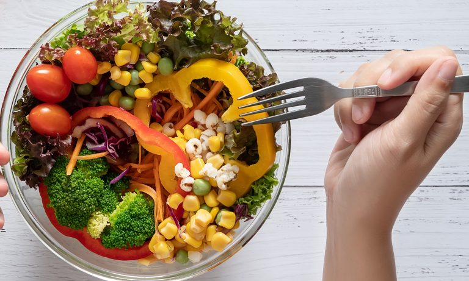

DASH diet

Dietary Approaches to Stop Hypertension, or DASH, is an eating plan designed to help treat or prevent high blood pressure, which is clinically known as hypertension. It recommends specific servings of different food groups. The number of servings you are encouraged to eat depends on your daily calorie intake.
Plant & flexitarian diets
Typical vegetarian diets restrict meat of all kinds but allow dairy products. Typical vegan diets restrict all animal products, including dairy, butter, and sometimes other byproducts like honey.